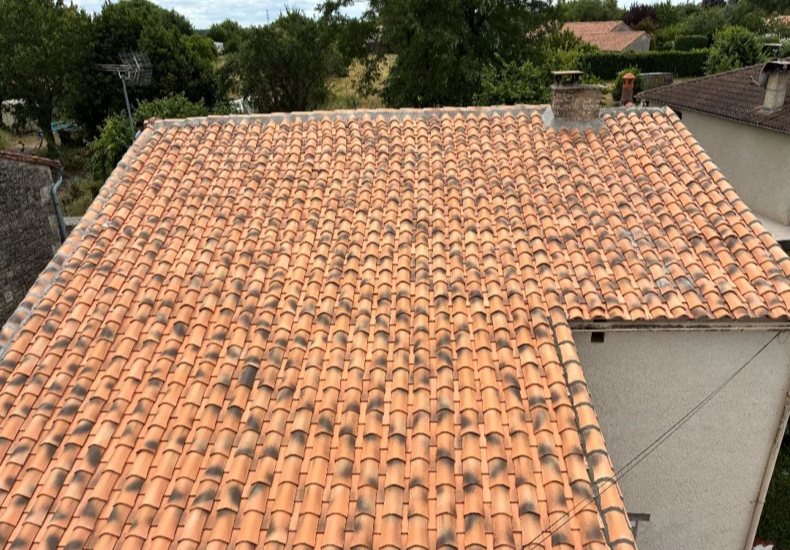
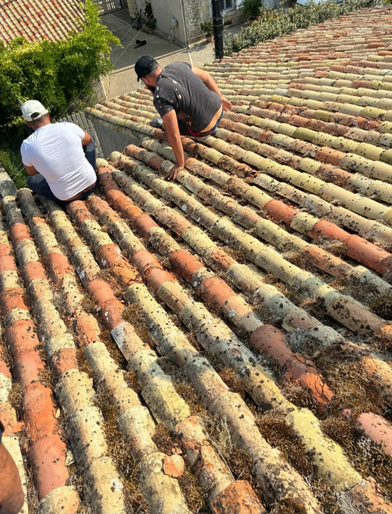
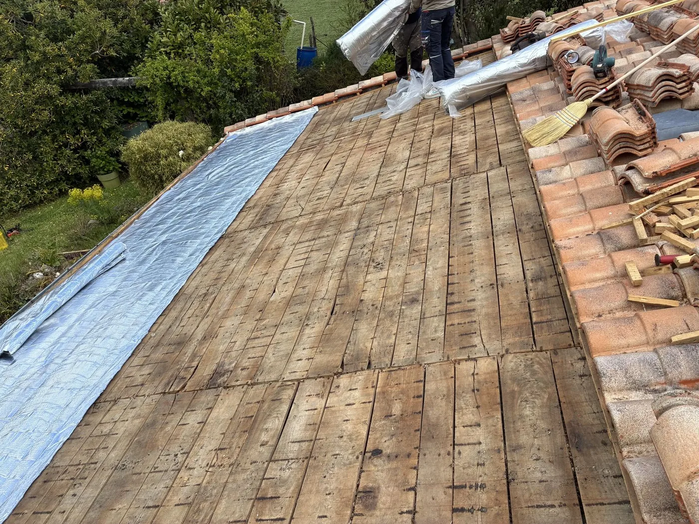
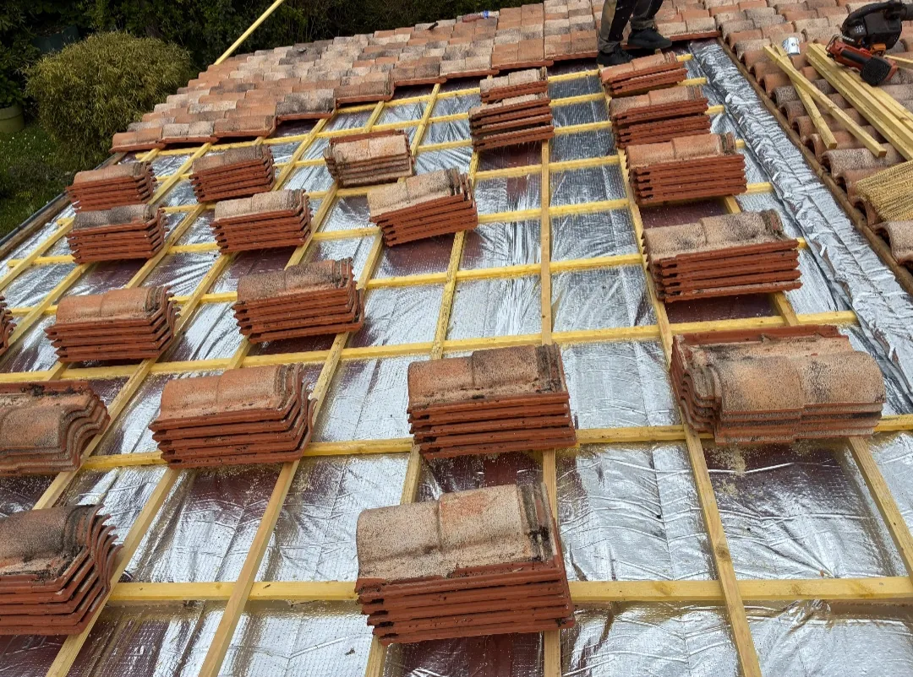
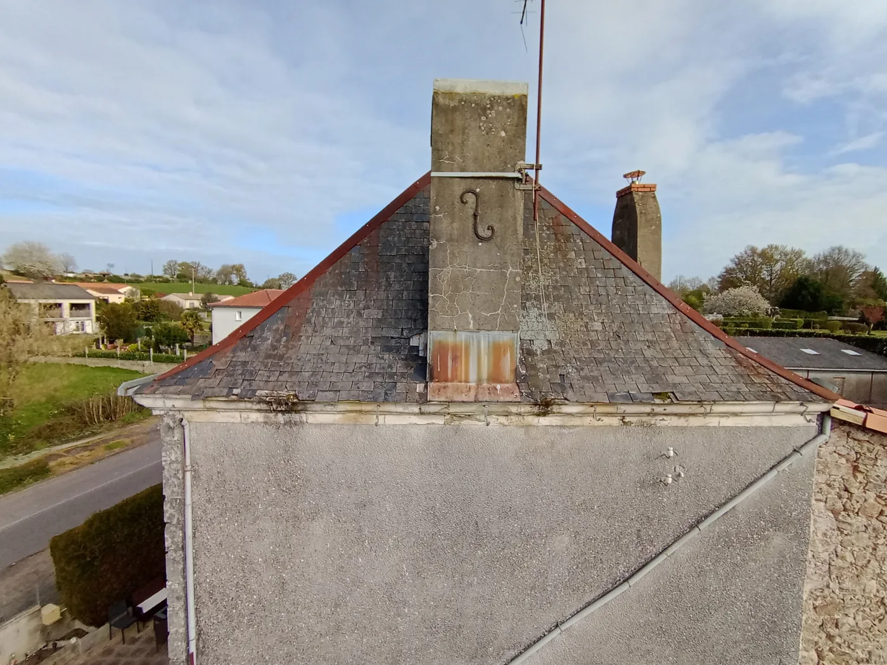
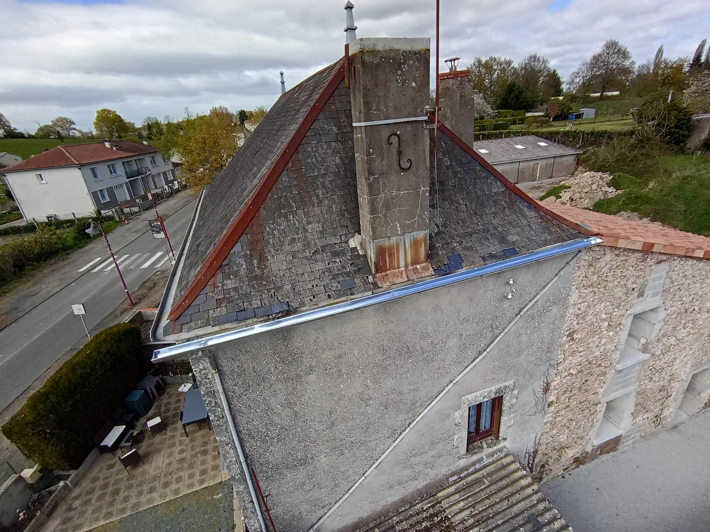

Réparation de charpente
Remplacement des chevrons, pannes ou liteaux abîmés, reprise des assemblages qui ont joué avec le temps.
Poutre abîmée, faîtage qui s'affaisse, bois attaqué par les insectes ? Nous réparons, renforçons et traitons votre charpente à Niort et dans tout le 79, en même temps que la couverture si besoin.

La charpente porte toute la toiture. Nous la contrôlons, la réparons ou la remplaçons, puis nous refermons le toit nous-mêmes : un seul artisan pour la structure et la couverture.
Remplacement des chevrons, pannes ou liteaux abîmés, reprise des assemblages qui ont joué avec le temps.
Doublage des pièces fatiguées, ajout de contreventements : on redonne à la structure sa rigidité d'origine.
Traitement préventif et curatif contre les insectes xylophages et les champignons, bois neufs comme anciens.
Travail du bois massif selon les règles du métier, pour les maisons anciennes comme pour les extensions.
Contrôle des bois, de l'humidité et des déformations avant tout chiffrage. On vous montre ce qu'on a vu.
Nous refaisons aussi la couverture au-dessus : tuiles, ardoises et zinguerie, sans intermédiaire.
Fais glisser le curseur pour comparer chaque intervention sur des chantiers réels.

Charpente & toiture


Structure & confort


Zinguerie & finitions
Quatre étapes, annoncées à l'avance. Vous savez à chaque moment où en est le chantier.
Diagnostic sur place. Nous montons sur le toit quand il le faut : une toiture ne se juge pas depuis le sol.
Chaque poste est chiffré ligne par ligne. Gratuit, et remis avant tout engagement de votre part.
Réalisé par nos équipes, du premier jour au dernier. Aucune partie n'est confiée à un tiers.
Nous repassons avec vous sur le travail fini, et nous revenons si un détail doit être repris.
Une charpente ne se répare pas sans toucher à la toiture. Nous faisons les deux, ce qui évite de coordonner plusieurs entreprises et de payer deux déplacements.
Basés à Aiffres, nous intervenons à Niort et dans toute l'agglomération. Travaux couverts par notre garantie décennale.
Zone d'intervention : Niort, Aiffres, Chauray, Échiré, Prahecq, Bessines, Magné, Fors — et tout le département des Deux-Sèvres (79).
Parler de votre projet →Un faîtage qui ondule, des tuiles qui se décalent, de la sciure au grenier ou des traces d'humidité sur le bois sont des signes à prendre au sérieux. Le mieux est une visite : nous contrôlons les bois et vous expliquons ce qu'il faut faire, ou ne pas faire.
Rarement. Dans la plupart des cas, on remplace ou on double uniquement les pièces touchées, puis on traite l'ensemble. Le remplacement complet n'est proposé que lorsque la structure ne tient plus.
Un traitement préventif protège le bois pendant des années contre les insectes et les champignons. Sur une charpente déjà attaquée, on passe à un traitement curatif, plus poussé.
Oui. Nous sommes couvreurs avant tout : quand la charpente est reprise, nous reposons ou refaisons la couverture et la zinguerie dans la foulée.
Nos autres métiers :
Couvreur à Aiffres et Niort · Zinguerie & gouttières · Démoussage & hydrofuge
Nos zones d'intervention dans le 79 :
Couvreur Niort · Couvreur Aiffres · Couvreur Chauray · Couvreur Échiré · Couvreur Prahecq · Couvreur Bessines · Couvreur Magné · Couvreur Fors